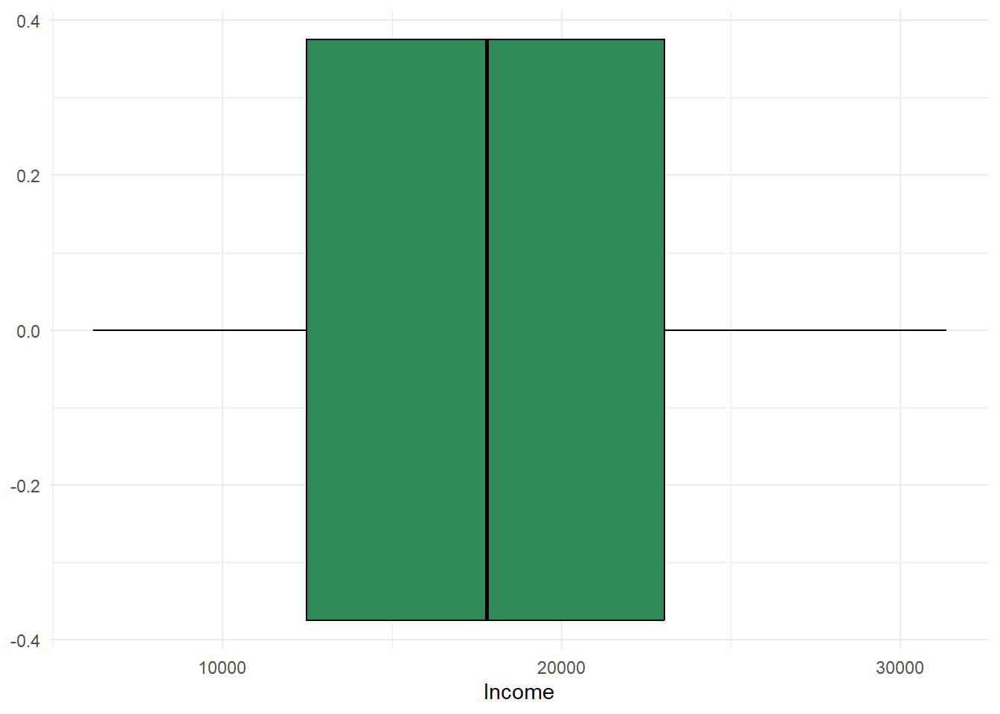
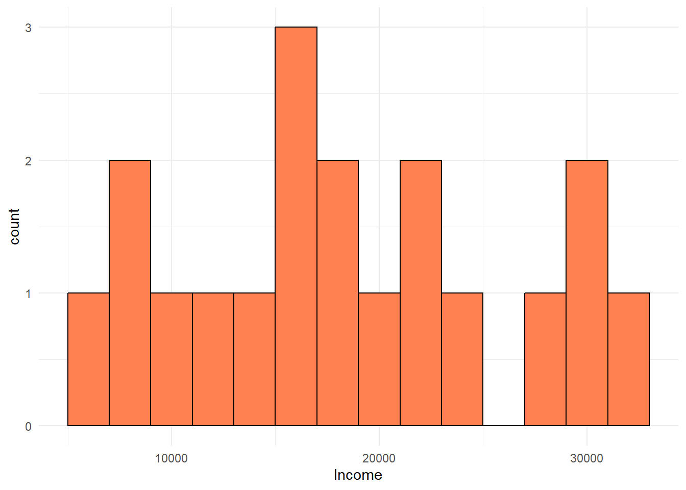
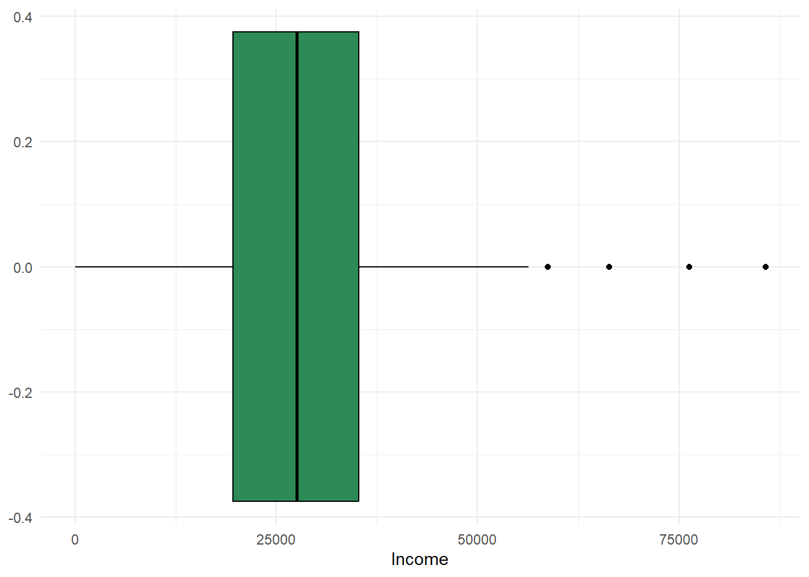
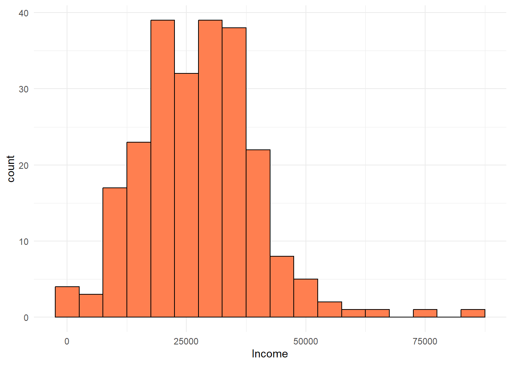

Directions: Please answer all portions of the questions, providing appropriate examples and evidence as needed. Please label the questions you’re trying to answer. Describe the answers you get in words as well as provide all your calculations. If you use any symbols in your answer sheet, please state in words what each symbol stands for, and indicate the units of the answers wherever applicable. Provide the code used to solve these problems with your answers.
Rows: 236 Columns: 2
── Column specification ────────────────────────────────────────────────────────
Delimiter: ","
dbl (2): Observation number, Income
ℹ Use `spec()` to retrieve the full column specification for this data.
ℹ Specify the column types or set `show_col_types = FALSE` to quiet this message.
1. The 236 values that appear in the excel sheet on Canvas are the 1990 median household incomes (in dollars) for the 236 census tracts of Buffalo, New York.
For the first 19 tracts, find the mean, median, range, interquartile range, standard deviation, and variance. In addition, construct a box plot, and a histogram for these 19 observations.
#make a subset dataframe with just the first 19 rows. first19 <- incomes[c(1:19), c(1:2)]#find the meanfirst19_mean <-mean(first19$Income)#Print resultscat("Mean:", first19_mean, "\n")
Mean: 18284.53
#find the medianfirst19_median <-median(first19$Income)#Print resultscat("Median:", first19_median, "\n")
Median: 17803
#find the rangefirst19_range <-range(first19$Income)#Print resultscat("Range:", first19_range, "\n")
Range: 6173 31347
#find the interquartile rangefirst19_iqr <-IQR(first19$Income)#Print resultscat("Interquartile Range:", first19_iqr, "\n")
Interquartile Range: 10541
#find the standard deviationfirst19_sd <-sd(first19$Income)#Print resultscat("Standard Deviation:", first19_sd, "\n")
Standard Deviation: 7808.687
#find the variancefirst19_var <-var(first19$Income)#Print resultscat("Variance:", first19_var, "\n")
Variance: 60975585
#construct a boxplotggplot(data = first19, aes(x = Income)) +geom_boxplot(fill ="seagreen", color ="black") +theme_minimal()

#construct a histogramggplot(data = first19, aes(x = Income)) +geom_histogram(binwidth =2000, fill ="coral", color ="black") +theme_minimal()

Repeat part a, this time using all 236 observations.
#find the mean for ALL observationsall_mean <-mean(incomes$Income)#Print resultscat("Mean:", all_mean, "\n")
Mean: 27600.36
#find the median for ALL observationsall_median <-median(incomes$Income)#Print resultscat("Median:", all_median, "\n")
Median: 27512
#find the range for ALL observationsall_range <-range(incomes$Income)#Print resultscat("Range:", all_range, "\n")
Range: 0 85742
#find the interquartile range for ALL observationsall_iqr <-IQR(incomes$Income)#Print resultscat("Interquartile Range:", all_iqr, "\n")
Interquartile Range: 15600.75
#find the standard deviation for ALL observationsall_sd <-sd(incomes$Income)#Print resultscat("Standard Deviation:", all_sd, "\n")
Standard Deviation: 12299.89
#find the variance for ALL observationsall_var <-var(incomes$Income)#Print resultscat("Variance:", all_var, "\n")
Variance: 151287178
#construct a boxplot for ALL observationsggplot(data = incomes, aes(x = Income)) +geom_boxplot(fill ="seagreen", color ="black") +theme_minimal()

#construct a histogram for ALL observationsggplot(data = incomes, aes(x = Income)) +geom_histogram(binwidth =5000, fill ="coral", color ="black") +theme_minimal()

Comment on your results. In particular, what does it mean to find the mean of set of medians? How do the observations that have a value of 0 affect the results? Should they be included?
#No strict correct answer. Write your thoughts!
2. The following data represent stream link lengths in a river network (given in meters):
#Calculate Standard Deviationstream_sd <-sd(stream_link)#Print resultscat("Standard Deviation:", stream_sd, "\n")
Standard Deviation: 269.1638
3. What is the coefficient of variation among the following commuting times (in minutes):
23, 43, 42, 7, 23, 11, 23, 55?
commuting <-c(23, 43, 42, 7, 23, 11, 23, 55)# Calculate the meanmean_value <-mean(commuting)# Calculate the standard deviationstd_dev <-sd(commuting)# Calculate the coefficient of variationcv <- (std_dev / mean_value) *100# Print the resultscat("Coefficient of Variation:", cv, "%\n")
Coefficient of Variation: 58.87942 %
4. The following data are derived by Rogerson et al. (1993) from the US National Survey of Families and Households. Cumulative relative frequency distribution of distance to parents among adult children is shown below:
Distance
CumulativeRelativeFrequency
5
0.236
10
0.338
15
0.418
20
0.460
25
0.492
30
0.522
35
0.546
40
0.556
45
0.565
50
0.575
100
0.643
150
0.683
250
0.741
300
0.756
350
0.777
400
0.787
450
0.800
500
0.808
1000
0.876
1500
0.921
2000
0.945
2500
0.966
3000
0.974
3500
0.994
Questions below apply to adult children who have both parents alive and living together.
What fraction of adult children have parents that live more than 30 miles away, but no more than 100 miles away?
# Calculate the fraction of adult children with parents living more than 30 but no more than 100 miles awayfraction_a <- families_df$CumulativeRelativeFrequency[which(families_df$Distance ==100)] - families_df$CumulativeRelativeFrequency[which(families_df$Distance ==30)]fraction_a
[1] 0.121
What fraction of adult children has parents that live more than 250 miles away?
# Calculate the fraction of adult children with parents living more than 250 miles awayfraction_b <-1- families_df$CumulativeRelativeFrequency[which(families_df$Distance ==250)]fraction_b
[1] 0.259
What is the likelihood that at least one of three randomly chosen adults will have parents living more than 100 miles away?
# Probability of having parents living more than 100 miles awayp_more_than_100 <-1- families_df$CumulativeRelativeFrequency[which(families_df$Distance ==100)]# Probability that at least one of three has parents living more than 100 miles awayp_at_least_one <-1- (1- p_more_than_100)^3p_at_least_one
[1] 0.7341523
Show sample space.
sample_space <-c("More than 100 miles", "Not more than 100 miles")sample_space
[1] "More than 100 miles" "Not more than 100 miles"
Assign probabilities to each element in the sample space.
More than 100 miles Not more than 100 miles
0.357 0.643
Give the desired probability.
#The probability you calculated for at least one of three randomly chosen adults will have parents living more than 100 miles away is already in p_at_least_one.
What is the median distance that characterizes the spatial separation of parents and their adult children?
# Median distancemedian_distance <-median(families_df$Distance)median_distance
[1] 200
Determine the likelihood that two or more adult children out of a group of ten live more than 1000 miles from their parents.
# Probability of living more than 1000 miles awayp_more_than_1000 <-1- families_df$CumulativeRelativeFrequency[which(families_df$Distance ==1000)]# Probability of two or more out of tenn <-10k <-2prob_two_or_more <-1-pbinom(k -1, n, p_more_than_1000)prob_two_or_more
[1] 0.3572344
5. Incomes are exponentially distributed with a mean of $10,000. What fraction of the population has income: a) Less than or equal to $8000? b) Greater than $12,000? c) Between $9,000 and $12,000?
#Calculating this will involve probability density functions(p.d.f)# Parametersmean_income <-10000# a. Fraction with income less than or equal to $8000x_a <-8000fraction_a <-1-exp(-x_a / mean_income)# b. Fraction with income greater than $12,000x_b <-12000fraction_b <-exp(-x_b / mean_income)# c. Fraction with income between $9,000 and $12,000x_c1 <-9000x_c2 <-12000fraction_c <- (1-exp(-x_c2 / mean_income)) - (1-exp(-x_c1 / mean_income))# Resultscat("Fraction (a):", fraction_a, "\n")
Fraction (a): 0.550671
cat("Fraction (b):", fraction_b, "\n")
Fraction (b): 0.3011942
cat("Fraction (c):", fraction_c, "\n")
Fraction (c): 0.1053754
6. The number of customers at a bank each day is found to be normally distributed with mean 250 and standard deviation of 110. What fraction of days will have less than 100 customers? More than 320? What number of customers will be exceeded 10% of the time?
# Parametersmean_customers <-250std_dev_customers <-110# a. Fraction of days with less than 100 customersp_less_100 <-pnorm(100, mean = mean_customers, sd = std_dev_customers)# b. Fraction of days with more than 320 customersp_more_320 <-1-pnorm(320, mean = mean_customers, sd = std_dev_customers)# c. Number of customers exceeded 10% of the time# Z-score for 90th percentilez_90 <-qnorm(0.90)# Calculate the corresponding number of customerscustomers_90th <- mean_customers + z_90 * std_dev_customers# Resultscat("Fraction of days with less than 100 customers:", p_less_100, "\n")
Fraction of days with less than 100 customers: 0.08634102
cat("Fraction of days with more than 320 customers:", p_more_320, "\n")
Fraction of days with more than 320 customers: 0.2622697
cat("Number of customers exceeded 10% of the time:", customers_90th, "\n")
Number of customers exceeded 10% of the time: 390.9707
7. Assume that the prices paid for housing within a neighborhood have a normal distribution, with mean $100,000, and standard deviation $35,000
What percentage of houses in the neighborhood have prices between $90,000 and $130,000?
What price of housing is such that only 12% of all houses in the neighborhood have lower prices?
# Parametersmean_price <-100000std_dev_price <-35000# a. Percentage of houses with prices between $90,000 and $130,000p_between_90k_130k <-pnorm(130000, mean = mean_price, sd = std_dev_price) -pnorm(90000, mean = mean_price, sd = std_dev_price)# Convert to percentagepercentage_between_90k_130k <- p_between_90k_130k *100# b. Price such that only 12% of houses have lower pricesz_12 <-qnorm(0.12)price_12_percent <- mean_price + z_12 * std_dev_price# Resultscat("Percentage of houses between $90,000 and $130,000:", percentage_between_90k_130k, "%\n")
Percentage of houses between $90,000 and $130,000: 41.67685 %
cat("Price of housing such that only 12% have lower prices:", price_12_percent, "\n")
Price of housing such that only 12% have lower prices: 58875.46
8. If the probability that an individual moves outside of their country of residence in a given year is 0.15, what is the probability that a. Less than three out of a sample of ten move outside the country? b. At least one moves outside the country?
# Parametersp <-0.15# probability of movingn <-10# sample size# a. Probability that less than 3 move outside the countryp_less_than_3 <-sum(dbinom(0:2, size = n, prob = p))# b. Probability that at least one moves outside the countryp_at_least_one <-1-dbinom(0, size = n, prob = p)# Resultscat("Probability that less than 3 move outside the country:", p_less_than_3, "\n")
Probability that less than 3 move outside the country: 0.8201965
cat("Probability that at least one moves outside the country:", p_at_least_one, "\n")
Probability that at least one moves outside the country: 0.8031256
9. There are an average of four accidents per month at an intersection. a. What is the probability of three or more accidents next month? b. What is the probability of two or more accidents in a 23-day period
# Parameterslambda_month <-4# average accidents per monthlambda_23_days <- (4/30) *23# average accidents in 23 days# a. Probability of three or more accidents next monthp_three_or_more <-1- (dpois(0, lambda_month) +dpois(1, lambda_month) +dpois(2, lambda_month))# b. Probability of two or more accidents in a 23-day periodp_two_or_more_23_days <-1- (dpois(0, lambda_23_days) +dpois(1, lambda_23_days))# Resultscat("Probability of three or more accidents next month:", p_three_or_more, "\n")
Probability of three or more accidents next month: 0.7618967
cat("Probability of two or more accidents in a 23-day period:", p_two_or_more_23_days, "\n")
Probability of two or more accidents in a 23-day period: 0.8105903
10. The annual probability of moving is 0.17.
What is the probability that a person moves for the first time in the first year of observation?
What is the probability that the person moves for the first time in the fourth year of observation?
What is the mean time it takes for an individual to move?
What is the variance of the time it takes for a person to move?
Among ten people, what is the probability that three of fewer move in a given year?
# Parametersp <-0.17# probability of movingq <-1- p # probability of not movingn <-10# sample size# a. Probability of moving for the first time in the first yearprob_first_year <- p# b. Probability of moving for the first time in the fourth yearprob_fourth_year <- q^3* p# c. Mean time it takes for an individual to movemean_time <-1/ p# d. Variance of the time it takes for a person to movevariance_time <- q / (p^2)# e. Probability that three or fewer move among ten peoplep_three_or_fewer <-sum(dbinom(0:3, size = n, prob = p))# Resultscat("Probability of moving for the first time in the first year:", prob_first_year, "\n")
Probability of moving for the first time in the first year: 0.17
cat("Probability of moving for the first time in the fourth year:", prob_fourth_year, "\n")
Probability of moving for the first time in the fourth year: 0.09720379
cat("Mean time to move:", mean_time, "\n")
Mean time to move: 5.882353
cat("Variance of time to move:", variance_time, "\n")
Variance of time to move: 28.71972
cat("Probability that three or fewer move among ten people:", p_three_or_fewer, "\n")
Probability that three or fewer move among ten people: 0.9258528